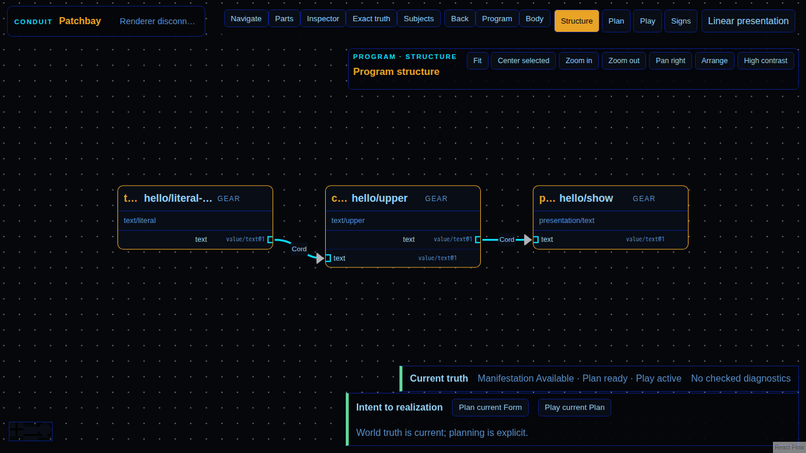

Documentary evidence captured only after semantic assertions passed.

browser-hostprove.browser-hostd93780a4d12346bdf41c5b87a1fcc84626aec0d6patchbay-html.disconnected@1Screenshotimage/png83338chromium151.0.7922.341366x768b01044901ee0e56bddd597e6d1e1a7c5129bcbf93e0920c5ea275e6261b9301184c67a3855f8a1d6c1dd77b933442a555db24474c16163126b289b80fb052d317478060302940a67f8d9ce090d4d00daeea4f0e69acbd056daccc3e3536c34a3f849c0fdf7a1e0626c120b6dde2b6b62b7b862372cb7272e46267111500630bc19fc61b09faa8237a00a13760ac0c9111e686100c3c56bd815167250b58622789patchbay-html/dom-svg@1delivery-unavailable-revision-and-plan-retained